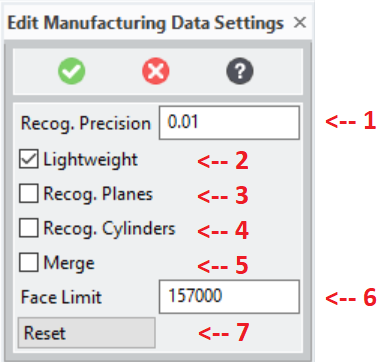
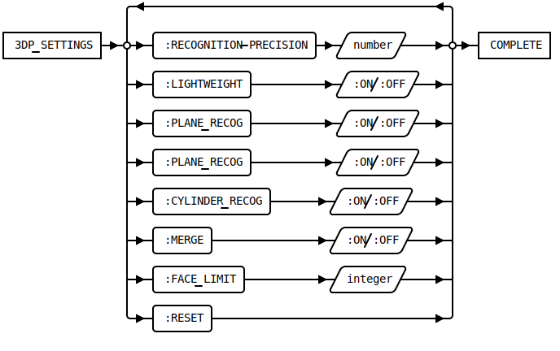

3DP_SETTINGS [Public Dialog]
Package: 3d-printing (Nick name(s): :3dp)
Edit customizable module settings for the 3d printing extension.

- Configures the
*3dp-default-recognition-precision*parameter. - Configures the
*3dp-lightweight-model-enabled*parameter. - Configures the
*3dp-plane-recognition-enabled*parameter. - Configures the
*3dp-cylinder-recognition-enabled*parameter. - Configures the
*3dp-merge-enabled*parameter. - Configures the
*3dp-face-count-limit*parameter. - Resets all parameters to the startup customization in
3dp_customize.
Syntax

Options
:RECOGNITION_PRECISION{number}- The surface recognition setting:
*3dp-default-recognition-precision* :LIGHTWEIGHT{boolean}- Lightweight model switch:
*3dp-lightweight-model-enabled* :PLANE_RECOG{boolean}- Plane recognition switch:
*3dp-plane-recognition-enabled* :CYLINDER_RECOG{boolean}- Cylinder recognition switch:
*3dp-cylinder-recognition-enabled* :MERGE{boolean}- Merge switch:
*3dp-merge-enabled* :FACE_LIMIT{number}- Face count limit:
*3dp-face-count-limit* :RESET- Reset all values to the factory default.